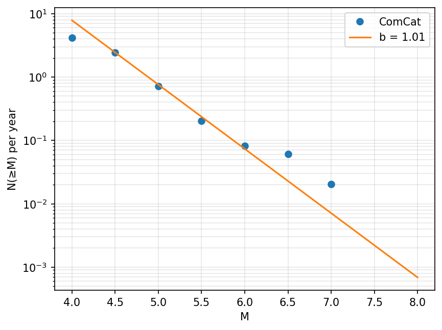
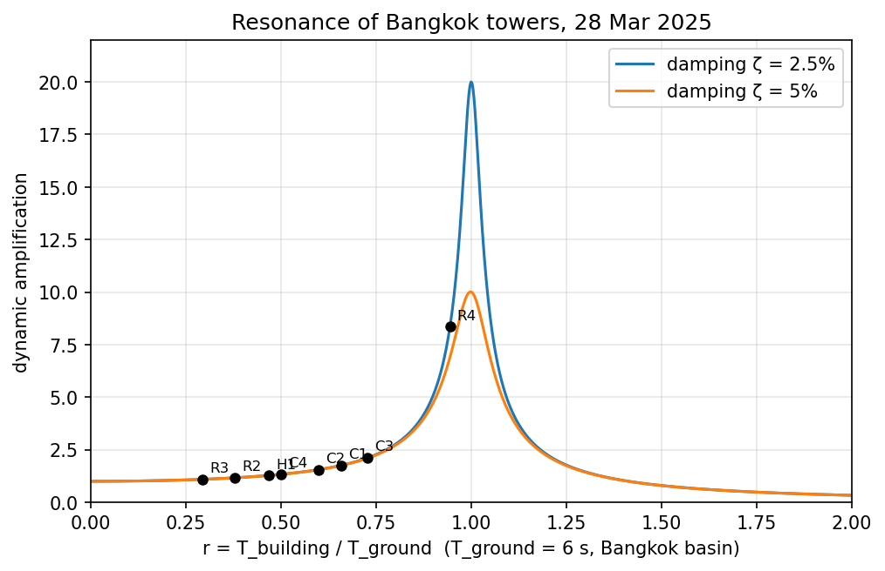

สัปดาห์ที่ 14 · SB3
การคาดการณ์ และการลดผลกระทบ
Gutenberg–Richter ความน่าจะเป็น งบการเลื่อน ขนาดสูงสุดจากความยาวรอยเลื่อน และการสั่นพ้องของอาคาร จบบทด้วยแบบทดสอบ Lab 6–8 และการเตรียมดูงาน
3.1 ทำนาย พยากรณ์ และเตือนภัย
| คำ | ความหมาย | ทำได้ไหม |
|---|---|---|
| Prediction (ทำนาย) | ระบุวันเวลา สถานที่ และขนาด ล่วงหน้า | ยังทำไม่ได้ |
| Forecast (พยากรณ์) | ความน่าจะเป็นของแผ่นดินไหวขนาดหนึ่งในช่วงหลายปี | ทำได้ ด้วยสถิติ (Lab 6) |
| Early warning (เตือนภัยล่วงหน้า) | ตรวจคลื่น P แล้วเตือนก่อนคลื่น S มาถึง | ทำได้ ล่วงหน้าไม่กี่วินาทีถึงหลายสิบวินาที |
การพยากรณ์ใช้สองแหล่งข้อมูล: สถิติจากแค็ตตาล็อก (Gutenberg–Richter) และอัตราการเคลื่อนของรอยเลื่อน (งบการเลื่อน) สองวิธีนี้ให้คำตอบต่างกันได้มาก
ตัวอย่าง · เตือนภัยล่วงหน้าได้กี่วินาที
สถานีใกล้สุดห่างจุดเหนือศูนย์ 30 km · เมืองห่าง 150 km · Vp = 6 km/s · Vs = 3.5 km/s · ระบบใช้เวลาประมวลผลและส่งข้อความ 4 s (ไม่คิดความลึก)
3.2 กฎ Gutenberg–Richter และค่า b
log₁₀ N(≥M) = a − bM
b = log₁₀e / (M̄ − (Mc − ΔM/2)) (Aki, 1965)
σb ≈ b / √NN(≥M) คือจำนวนแผ่นดินไหวที่ขนาดตั้งแต่ M ขึ้นไปต่อปี · b ≈ 1 แปลว่าขนาดเพิ่ม 1 หน่วย จำนวนลดลง 10 เท่า · Mc คือขนาดเล็กสุดที่เครือข่ายตรวจได้ครบ

ตัวอย่าง · รอยเลื่อนสะกายก่อนเหตุการณ์ 2025
120 เหตุการณ์ M ≥ 4.5 ใน 49.2 ปี · b = 1.01
3.3 คาบการเกิดซ้ำและความน่าจะเป็น
T = 1 / λ คาบการเกิดซ้ำ (ปี)
P(t) = 1 − e^(−t/T) โอกาสเกิดอย่างน้อย 1 ครั้งใน t ปี| ระดับออกแบบ | T | ใช้กับ |
|---|---|---|
| 10% ใน 50 ปี | 475 ปี | อาคารทั่วไป |
| 2% ใน 50 ปี | 2,475 ปี | อาคารสำคัญ / maximum considered earthquake |
ตัวอย่าง · โอกาส M ≥ 7 บนรอยเลื่อนสะกายใน 50 ปี
λ = 0.0071 ครั้ง/ปี (จาก Lab 6)
3.4 งบการเลื่อน และ aftershock
GPS วัดได้ว่ารอยเลื่อนสะกายเคลื่อน ~18 mm/ปี (Vigny et al., 2003) รอยเลื่อนที่ถูกล็อกจะสะสมการเลื่อนที่ค้างไว้จนแผ่นดินไหวครั้งถัดไปปลดปล่อย:
T ≈ D / V (D = การเลื่อนเฉลี่ยต่อครั้ง, V = อัตราการเคลื่อน)ตัวอย่าง · งบการเลื่อนของรอยเลื่อนสะกาย
D ≈ 3.3 m ต่อครั้ง · V = 18 mm/ปี
Aftershock
- Omori–Utsu: อัตรา aftershock n(t) = K/(t + c)^p โดย p ≈ 1 ลดลงตามเวลา (วันที่ 10 น้อยกว่าวันที่ 1 ราว 10 เท่า)
- Båth: aftershock ใหญ่สุดมักเล็กกว่าแผ่นดินไหวหลักราว 1.2 หน่วย
3.5 ขนาดสูงสุดจากความยาวรอยเลื่อน: Wells & Coppersmith (1994) กับรอยเลื่อนเจดีย์สามองค์
แค็ตตาล็อกบอกได้ว่าแผ่นดินไหวบ่อยแค่ไหน (หัวข้อ 3.2) แต่รอยเลื่อนที่เงียบมานานอย่างรอยเลื่อนเจดีย์สามองค์ (Three Pagodas Fault Zone, TPFZ) ใน จ.กาญจนบุรี แทบไม่มีแผ่นดินไหวใหญ่ในแค็ตตาล็อกเลย คำถามที่วิศวกรเขื่อนถามจึงเป็นอีกแบบ: รอยเลื่อนนี้ให้แผ่นดินไหวได้ใหญ่ที่สุดเท่าไร คำตอบมาจากขนาดของรอยเลื่อนเอง ยิ่งรอยแตกยาวและกว้าง M₀ = μ·L·W·D ยิ่งมาก (หัวข้อ 1.3)
TPFZ วางตัวแนว ตะวันตกเฉียงเหนือ–ตะวันออกเฉียงใต้ เป็นรอยเลื่อนตามแนวระดับแบบเหลื่อมซ้าย (sinistral strike-slip) ทอดจากด่านเจดีย์สามองค์ ผ่านสังขละบุรี ทองผาภูมิ ไทรโยค ถึงกาญจนบุรี ใกล้เขื่อนวชิราลงกรณ (เขาแหลม) และเขื่อนศรีนครินทร์ กรมทรัพยากรธรณีจัดเป็นรอยเลื่อนมีพลัง รอยเลื่อนยาวมักไม่แตกทั้งแนวพร้อมกัน จึงแบ่งเป็นช่วง (segment) ตามจุดหักงอหรือจุดเหลื่อม แล้วตั้งฉากทัศน์ว่าแตกช่วงเดียวหรือหลายช่วงต่อกัน (cascade)

| ช่วง | ชื่อ | ปลาย NW | ปลาย SE | L (km) |
|---|---|---|---|---|
| S1 | ด่านเจดีย์สามองค์ – สังขละบุรี | 98.38°E 15.30°N | 98.58°E 14.90°N | 49 |
| S2 | ทองผาภูมิ | 98.58°E 14.90°N | 98.80°E 14.52°N | 49 |
| S3 | ไทรโยค | 98.80°E 14.52°N | 99.12°E 14.20°N | 50 |
| S4 | กาญจนบุรี | 99.12°E 14.20°N | 99.55°E 13.97°N | 53 |
Wells & Coppersmith (1994) รวบรวมแผ่นดินไหวในอดีต 244 เหตุการณ์ แล้วหาสมการถดถอยระหว่าง M กับขนาดรอยแตก สมการสำหรับรอยเลื่อนตามแนวระดับ (SS) ที่ใช้ในวิชานี้ (log ฐาน 10):
M = 5.16 + 1.12 log SRL σ = 0.28 SRL = ความยาวรอยแตกบนผิวดิน (km)
M = 3.98 + 1.02 log RA σ = 0.23 RA = L × W (km²)
M = 6.81 + 0.78 log MD σ = 0.29 MD = การเลื่อนสูงสุด (m)
log AD = −6.32 + 0.90 M AD = การเลื่อนเฉลี่ย (m)
M₀ = μ · RA · AD Mw = ⅔(log M₀ − 9.1) μ = 3×10¹⁰ Pa, RA เป็น m²ตัวอย่าง · ช่วง S2 ทองผาภูมิ (L = 49 km, W = 15 km)
รอยเลื่อนตั้งดิ่ง ความลึกที่เกิดแผ่นดินไหวได้ 15 km · สมมติว่าแตกตลอดช่วง S2
ยาวขึ้นเท่าตัว M เพิ่มแค่ 1.12 × log 2 ≈ 0.34 แต่ M₀ เพิ่มราว 3 เท่า และการสั่นคาบยาวกับระยะเวลาการสั่นก็เพิ่มด้วย ฉากทัศน์ที่แตกหลายช่วงต่อกันจึงสำคัญมากต่ออาคารสูงและเขื่อน
ทำ Lab 8 ใน Google Sheets หรือทำแบบฝึกหัดฉบับเต็ม 8 ข้อบนกระดาษ
Lab 8 · ขนาดสูงสุดของรอยเลื่อนเจดีย์สามองค์ด้วย Wells & Coppersmith (1994)
แท็บ Lab8 ที่ประเมิน M ของรอยเลื่อนเจดีย์สามองค์ 7 ฉากทัศน์ด้วย 3 วิธี และเลือก MCE สำหรับเขื่อนพร้อมเหตุผล
- เวลา
- ประมาณ 40 นาที
- ส่งงาน
- แท็บ Lab8_TPFZ + แถว Three Pagodas FZ ใน Summary
- ต่อยอดจาก
- Lab 1 (Mw จากขนาดรอยเลื่อน) และ Lab 6
การ์ดขั้นตอน
ไปที่แท็บ Lab8_TPFZ แล้วเปิดแผนที่รอยเลื่อนเจดีย์สามองค์ด้านบน ใช้ไม้บรรทัดเทียบกับ scale bar 50 km วัดความยาวช่วง S2 (ทองผาภูมิ) จากวงกลมขาวถึงวงกลมขาว (หัวข้อ 3.5)
ระยะตรงได้ราว 48 km (±3 km) · ตาราง Lab8_TPFZ ใช้ 49 km เพราะวัดตามแนวรอยเลื่อนที่หักมุมใกล้ทองผาภูมิ ซึ่งยาวกว่าเส้นตรงเล็กน้อย
ไม่ได้ผล? ดูวิธีแก้
คำนวณ M จากความยาวรอยแตกบนผิวดิน (SRL) ด้วยสมการ strike-slip ของ Wells & Coppersmith (1994) ทั้ง 7 แถว
Google Sheets · แท็บ Lab8_TPFZ ช่อง E2วางในช่องนั้น กด Enter แล้วลากมุมขวาล่างของช่องลงจนสุดตาราง
=5.16+1.12*LOG10(B2)S1 7.05 · S2 7.05 · S3 7.06 · S4 7.09 · S2+S3 7.40 · S1+S2+S3 7.59 · ทั้งแนว S1–S4 7.74
ไม่ได้ผล? ดูวิธีแก้
คำนวณพื้นที่รอยแตก RA = L × W (W = 15 km รอยเลื่อนตั้งดิ่ง ลึก 15 km) แล้วหา M จาก RA
Google Sheets · ช่อง D2 และ F2บรรทัดแรกใน D2 บรรทัดที่สองใน F2 แล้วลากลงทั้งสองคอลัมน์
=B2*C2
=3.98+1.02*LOG10(D2)S2: RA 735 km² · M(RA) 6.90 · S1+S2+S3: 2220 km² · 7.39 · ทั้งแนว: 3015 km² · 7.53 → M(RA) ต่ำกว่า M(SRL) ราว 0.15–0.2 ทุกแถว
ไม่ได้ผล? ดูวิธีแก้
หาช่วงความไม่แน่นอน ±1σ ของ M(SRL) โดย σ = 0.28
Google Sheets · ช่อง G2 และ H2บรรทัดแรกใน G2 บรรทัดที่สองใน H2 แล้วลากลง
=E2-0.28
=E2+0.28S2 6.77 – 7.33 (โอกาสราว 68% ที่ขนาดจริงอยู่ในช่วงนี้) · S1+S2+S3 7.31 – 7.87 · ทั้งแนว 7.46 – 8.02
ไม่ได้ผล? ดูวิธีแก้
ตรวจด้วย seismic moment: หาการเลื่อนเฉลี่ย AD จาก log AD = −6.32 + 0.90M แล้วคำนวณ M₀ = μ·RA·AD และ Mw (μ = 3 × 10¹⁰ Pa · เทคนิคเดียวกับ Lab 1 ขั้น 6)
Google Sheets · ช่อง I2, J2 และ K2บรรทัดละช่อง I2 J2 K2 แล้วลากลงทั้งสามคอลัมน์
=10^(-6.32+0.9*E2)
=3E10*D2*1E6*I2
=2/3*(LOG10(J2)-9.1)S2: AD 1.07 m · M₀ 2.35E+19 N·m · Mw 6.85 · S1+S2+S3: 3.25 m · 2.16E+20 · 7.49 · ทั้งแนว: 4.42 m · 4.00E+20 · 7.67 → สามวิธีต่างกันราว 0.2 หน่วย
ไม่ได้ผล? ดูวิธีแก้
ข้อมูลร่องสำรวจ (trench) สมมติ: บน S1 พบการเลื่อนซ้ายสูงสุดในเหตุการณ์เดียว MD = 2.0 m หา M จาก MD แล้วเลือก MCE สำหรับเขื่อนใกล้ทองผาภูมิ กรอกในแถว Three Pagodas FZ (scenario) ของแท็บ Summary
Google Sheets · ช่องว่างใดก็ได้พิมพ์แล้วกด Enter
=6.81+0.78*LOG10(2)7.04 ≈ M(SRL) ของ S1 (7.05) → การเลื่อน 2 m สอดคล้องกับการแตกทั้งช่วง S1 · คำตอบที่ปลอดภัยสำหรับเขื่อน: S1+S2+S3 M ≈ 7.6 และตรวจ +1σ ≈ 7.9 · ช่อง Notes เขียนเหตุผลและข้อจำกัด 1 ข้อ
ไม่ได้ผล? ดูวิธีแก้
3.6 การสั่นพ้องของอาคารและการลดผลกระทบ
อาคารคือระบบสั่นมวล–สปริง–ตัวหน่วง (SDOF) แบบเดียวกับเครื่องจักรบนฐานรองรับในครึ่งแรกของวิชา ถ้าพื้นดินสั่นที่คาบใกล้คาบของอาคาร อาคารจะสั่นแรงขึ้นหลายเท่า:
DAF = 1 / √[(1 − r²)² + (2ζr)²] r = T_อาคาร / T_พื้นดิน
ที่ r = 1: DAF = 1/(2ζ) → 20 เมื่อ ζ = 2.5%, 10 เมื่อ ζ = 5%
คาบอาคารโดยประมาณ T ≈ 0.1N (N = จำนวนชั้น)
ตัวอย่าง · อาคาร 61 ชั้น (C3)
วัดคาบได้ 4.36 s · แอ่งดิน 6 s · ζ = 2.5%
ลดผลกระทบอย่างไร
- หลีกเลี่ยงการสั่นพ้อง: ออกแบบให้คาบอาคารห่างจากคาบชั้นดินในพื้นที่ (รู้ได้จากการวัด HVSR)
- เพิ่มความหน่วง: damper แบบหนืด tuned mass damper ลด DAF ที่การสั่นพ้องโดยตรง (ζ จาก 2.5% เป็น 5% ลด DAF สูงสุดจาก 20 เหลือ 10)
- แยกฐาน (base isolation): ยืดคาบของอาคารเตี้ยให้ห่างจากคาบสั้นที่พลังงานสูง
- มาตรฐานการออกแบบ: ประเทศไทยมีมาตรฐาน มยผ. 1301/1302 ที่ใช้ค่าความเร่งจากการวิเคราะห์ความน่าจะเป็น (หัวข้อ 3.3) และชนิดดิน (หัวข้อ 2.5)
- ตรวจวัด: สถานีตรวจวัดการสั่นสะเทือนให้ข้อมูลทั้งการเตือนภัยและการปรับสมการ GMPE ให้เหมาะกับพื้นที่
3.7 เตรียมตัวดูงานสถานีตรวจวัดการสั่นสะเทือน (สัปดาห์ที่ 15)
ใช้คำถามเหล่านี้ระหว่างดูงาน แล้วเชื่อมกับสิ่งที่ทำใน Lab:
สิ่งที่ควรถามและสังเกต
- เซนเซอร์เป็นชนิดใด (broadband, short-period, accelerometer) วัดความเร็วหรือความเร่ง ช่วงความถี่เท่าไร
- อัตราการสุ่มตัวอย่าง (samples/s) และความถี่ Nyquist · CHTO ใช้ 40 Hz → วัดได้ถึง 20 Hz
- ติดตั้งอย่างไรให้ noise ต่ำ: ฐานคอนกรีตบนหิน หลุมเจาะ ห่างถนนและต้นไม้แค่ไหน
- noise ช่วงกลางวันกับกลางคืนต่างกันแค่ไหน มีแหล่ง noise อะไรใกล้ ๆ
- ข้อมูลส่งไปที่ไหน ใช้เวลากี่วินาที ใช้ประกาศ ML หรือ Mw
- ถ้าแผ่นดินไหวใหญ่ใกล้มาก เครื่องวัดบันทึกเกินช่วง (clip) หรือไม่ มีเซนเซอร์สำรองไหม (เหมือน CHTO location 10)
Lab 6 · คาบการเกิดซ้ำและความน่าจะเป็น: รอยเลื่อนสะกาย
ค่า b, คาบการเกิดซ้ำ และความน่าจะเป็นใน 50 ปี จากแค็ตตาล็อกจริง เทียบกับวิธีงบการเลื่อน
- เวลา
- ประมาณ 40 นาที
- ส่งงาน
- กราฟ Gutenberg–Richter + แท็บ Lab6
- ต่อยอดจาก
- Lab 5
การ์ดขั้นตอน
ใน Colab อัปโหลด Lab6_Recurrence_Sagaing.ipynb หรือสร้าง Notebook ใหม่ แล้วดึงแค็ตตาล็อก USGS ของรอยเลื่อนสะกายก่อนเกิดเหตุ 2025
Colab · เซลล์โค้ดวางในเซลล์ใหม่ แล้วกด Shift+Enter
import pandas as pd, numpy as np, matplotlib.pyplot as plt
url = ("https://earthquake.usgs.gov/fdsnws/event/1/query?format=csv"
"&starttime=1976-01-01&endtime=2025-03-27"
"&minlatitude=19&maxlatitude=24.5&minlongitude=95&maxlongitude=97"
"&minmagnitude=4.0&maxdepth=40")
cat = pd.read_csv(url)
years = (pd.Timestamp("2025-03-27") - pd.Timestamp("1976-01-01")).days / 365.25
print(len(cat), "events in", round(years, 1), "years")204 events in 49.2 years
ไม่ได้ผล? ดูวิธีแก้
นับจำนวนแผ่นดินไหวสะสม N(≥M) ทุก 0.5 หน่วย (หัวข้อ 3.2)
Colab · เซลล์โค้ดวางในเซลล์ใหม่ แล้วกด Shift+Enter
Ms = np.arange(4.0, 7.01, 0.5)
N = np.array([(cat.mag >= m).sum() for m in Ms])
print(pd.DataFrame({"M>=": Ms, "N": N, "N/yr": (N/years).round(3)}).to_string(index=False))M≥4.5 120 (2.437/ปี) · M≥6.0 4 · M≥7.0 1 (0.020/ปี)
ไม่ได้ผล? ดูวิธีแก้
คำนวณ b-value ด้วยวิธี maximum likelihood ของ Aki (Mc = 4.5)
Colab · เซลล์โค้ดวางในเซลล์ใหม่ แล้วกด Shift+Enter
Mc, dM = 4.5, 0.1
m = cat.mag[cat.mag >= Mc]
b = np.log10(np.e) / (m.mean() - (Mc - dM/2))
a = np.log10(len(m)/years) + b*Mc
print(f"N = {len(m)} b = {b:.2f} ± {b/np.sqrt(len(m)):.2f} a = {a:.2f} (per year)")N = 120 b = 1.01 ± 0.09 a = 4.95 (per year)
ไม่ได้ผล? ดูวิธีแก้
คำนวณคาบการเกิดซ้ำ T และความน่าจะเป็นใน 50 ปี (Poisson) แล้วเทียบกับระดับออกแบบ 10% ใน 50 ปี (หัวข้อ 3.3)
Colab · เซลล์โค้ดวางในเซลล์ใหม่ แล้วกด Shift+Enter
for M in [6.0, 7.0, 7.7]:
rate = 10**(a - b*M)
T = 1/rate
P50 = 1 - np.exp(-50/T)
print(f"M>={M}: {rate:.4f}/yr T = {T:.0f} yr P(50 yr) = {P50*100:.0f}%")
print("10% in 50 yr -> T =", round(-50/np.log(0.9)), "yr")M>=7.0: 0.0071/yr T = 141 yr P(50 yr) = 30% · M>=7.7: 0.0014/yr T = 720 yr P(50 yr) = 7% · 10% in 50 yr -> T = 475 yr
ไม่ได้ผล? ดูวิธีแก้
วาดกราฟ Gutenberg–Richter แล้วเทียบ T ของ M7.7 จากแค็ตตาล็อก (720 ปี) กับวิธีงบการเลื่อน T = D/V = 3.3 m ÷ 18 mm/ปี (หัวข้อ 3.4)
Colab · เซลล์โค้ดวางในเซลล์ใหม่ แล้วกด Shift+Enter
plt.semilogy(Ms, N/years, "o", label="ComCat")
mm = np.linspace(4, 8, 50); plt.semilogy(mm, 10**(a - b*mm), label=f"b = {b:.2f}")
plt.xlabel("M"); plt.ylabel("N(≥M) per year"); plt.grid(True, which="both", alpha=.3); plt.legend()
plt.savefig("gr_sagaing.png", dpi=150, bbox_inches="tight")Colab · เซลล์โค้ด
print(round(3.3 / 0.018), "yr")จุดข้อมูลเรียงตามเส้นตรง b = 1.01 บนแกน log · 183 yr → สั้นกว่าค่าจากแค็ตตาล็อกราว 4 เท่า กรอกทั้งสองค่าในแท็บ Lab6 และคอลัมน์ Return period ของ Summary
ไม่ได้ผล? ดูวิธีแก้
Lab 7 · การสั่นพ้องของอาคารสูงในกรุงเทพฯ และการลดผลกระทบ
EQ Fact Sheet ฉบับสมบูรณ์ ที่จบด้วยการจัดอันดับความเสี่ยงอาคารและข้อเสนอลดผลกระทบ
- เวลา
- ประมาณ 35 นาที
- ส่งงาน
- ไฟล์ EQ Fact Sheet ฉบับสมบูรณ์ (ทุกแท็บ)
- ต่อยอดจาก
- Lab 6
การ์ดขั้นตอน
ไปที่แท็บ Lab7_Resonance (อาคารสูง 8 หลังในกรุงเทพฯ ที่วัดคาบหลังแผ่นดินไหว 2025) คำนวณ T/N และคาบตามกฎหัวแม่มือ 0.1N
Google Sheets · ช่อง D2 และ E2บรรทัดแรกใน D2 บรรทัดที่สองใน E2 แล้วลากลง
=C2/B2
=0.1*B2H1 (25 ชั้น) T/N 0.112 · R2 (45 ชั้น) 0.050 · R4 (79 ชั้น) 0.072 · 0.1N ของ R4 = 7.9 s แต่วัดได้ 5.66 s
ไม่ได้ผล? ดูวิธีแก้
หาค่า k ที่เหมาะกับอาคารไทย ในสูตร T = kN (เส้นตรงผ่านจุดกำเนิด)
Google Sheets · ช่อง I2พิมพ์แล้วกด Enter
=SUMPRODUCT(B2:B9,C2:C9)/SUMSQ(B2:B9)k = 0.075 → อาคารกรุงเทพฯ ชุดนี้มีคาบสั้นกว่ากฎ 0.1N ราว 25%
ไม่ได้ผล? ดูวิธีแก้
คำนวณอัตราส่วนคาบ r = T_อาคาร / T_พื้นดิน โดยใช้คาบแอ่งดินกรุงเทพฯ 6 s (หัวข้อ 3.6)
Google Sheets · ช่อง F2วางในช่องนั้น กด Enter แล้วลากมุมขวาล่างของช่องลงจนสุดตาราง
=C2/6R4 0.94 (ใกล้ 1 = ใกล้สั่นพ้อง) · C3 0.73 · R3 0.29
ไม่ได้ผล? ดูวิธีแก้
คำนวณตัวขยายพลวัต DAF ที่ความหน่วง ζ = 2.5%
Google Sheets · ช่อง G2วางในช่องนั้น กด Enter แล้วลากมุมขวาล่างของช่องลงจนสุดตาราง
=1/SQRT((1-F2^2)^2+(2*0.025*F2)^2)R4 8.3 · C3 2.1 · C1 1.8 · R3 1.1 · ค่าสูงสุดที่เป็นไปได้ (r = 1) = 1/(2ζ) = 20
ไม่ได้ผล? ดูวิธีแก้
จัดอันดับอาคารตามความเสี่ยงสั่นพ้อง แล้วเขียนข้อเสนอลดผลกระทบ 2 ข้อลงช่อง Notes ของ Summary แถว Mandalay
อันดับ 1 คือ R4 (79 ชั้น, DAF ≈ 8) ตามด้วย C3 และ C1 · ข้อเสนอ เช่น เพิ่มความหน่วง (damper) หรือออกแบบให้คาบอาคารห่างจากคาบแอ่งดิน 6–8 s
ไม่ได้ผล? ดูวิธีแก้
3.8 ตัวอย่างและแบบฝึกหัดเพิ่มเติม
ตัวอย่าง 2 ข้อ แล้วฝึกต่อด้วยแบบฝึกหัด 12 ข้อ จากนั้นลองกรณีศึกษาที่ใช้สูตรจากทั้ง 3 บทกับแผ่นดินไหวสมมติเหตุการณ์เดียว
ตัวอย่าง · จากการนับจำนวน ถึงโอกาสใน 50 ปี (สมมติ)
แค็ตตาล็อก 40 ปีของพื้นที่หนึ่งมี M ≥ 4 จำนวน 200 ครั้ง และ M ≥ 5 จำนวน 25 ครั้ง · อยากรู้โอกาส M ≥ 6 ใน 50 ปี
ตัวอย่าง · แยกฐานลดการสั่นได้แค่ไหน
โรงพยาบาล 3 ชั้น คาบ 0.3 s · พลังงานพื้นดินสูงสุดที่คาบ 0.3 s · ζ = 5% · ติดแผ่นยางแยกฐานยืดคาบเป็น 2.5 s และเพิ่ม ζ เป็น 10%